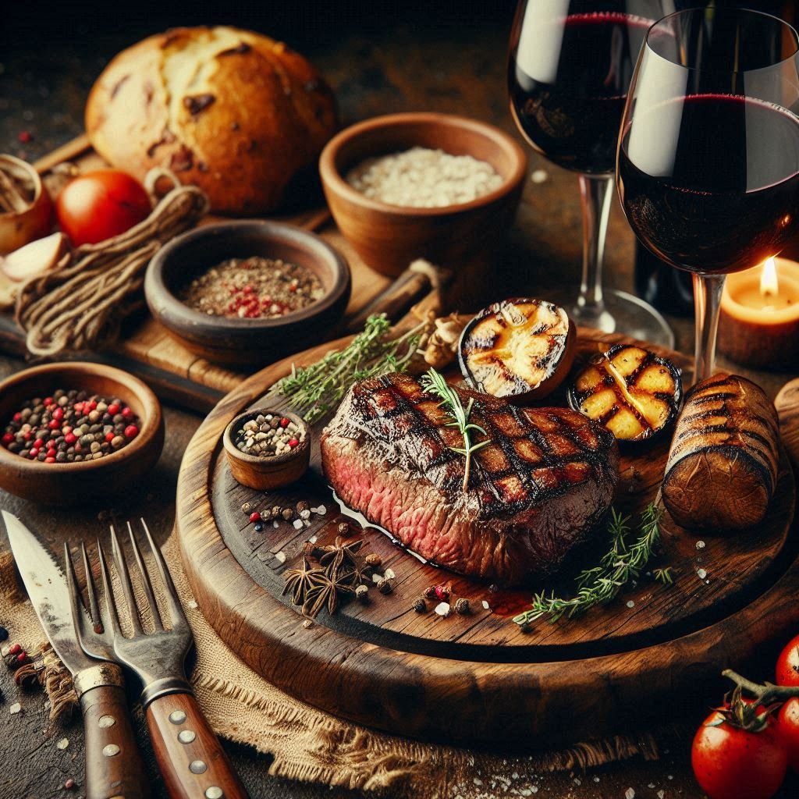
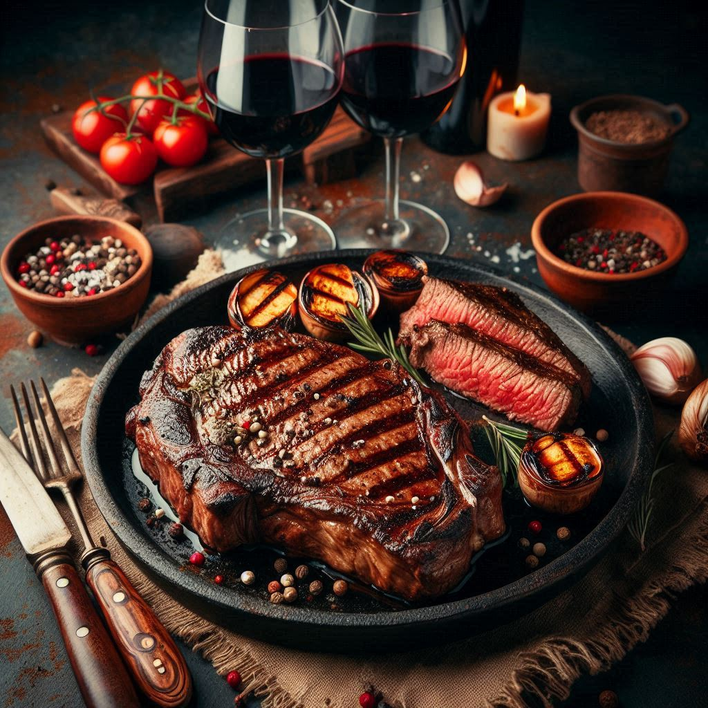

阿根廷的牛肉传奇：鲜美的牛排与红酒

炭烤美味，入口即化的香嫩牛排，让你瞬间爱上这份极致的享受
这款牛排外层带有精美的炭烤纹理，锁住了所有的肉汁和香气，每一口都能感受到它的多汁与嫩滑。
伴随着烤蔬菜的微甜和香草的清新点缀，入口即化，带来极致的味觉享受。
搭配一杯红酒，更是将这道美食的精髓完全呈现。
正宗阿根廷牛排的传统做法:
- 以下是传统阿根廷牛排的制作步骤：
- 阿根廷牛排（Bife de Chorizo，通常是厚切的里脊肉）
- 海盐、黑胡椒、橄榄油、香草调料
- 蔬菜、茄子、蘑菇
- 额外设备：炭烤架、木炭
做法描述：
牛排的准备：选择高质量的菲力牛排（约3厘米厚），用海盐、黑胡椒和迷迭香腌制15分钟，让香料慢慢渗透到肉质内部。
炭烤：预热烤架，保持高温。将腌制好的牛排放在烤架上，每面煎烤约2-3分钟，直到表面形成美丽的烤纹，内部仍然保持粉嫩多汁。
烤蔬菜：将切成大块的蔬菜（如茄子和蘑菇）用橄榄油和少量香草调料拌匀，放在烤架上烤至外皮焦脆，内心柔软。
搭配与摆盘：将牛排盛盘，旁边搭配烤蔬菜，并在牛排上撒上一些海盐晶粒，最后用迷迭香装饰。配上一杯红酒，即可享受这道经典的牛排大餐。
历史故事背后:
19世纪末，阿根廷经济开始迅速发展，牛肉成为最重要的出口产品。
随着牛肉贸易的繁荣，阿根廷的烤肉（Asado）文化开始逐渐形成。Asado不仅是一种美食，更是一种社交活动。
周末时，人们会聚集在家里、农场或野外，围着火炉，慢慢地炙烤牛肉，享受与家人朋友的时光。这种文化延续至今，成为阿根廷人生活中不可或缺的一部分。
而提到阿根廷牛排（Bife de Chorizo）时，我们总能联想到一杯深红色的马尔贝克（Malbec）红酒。
阿根廷的马尔贝克葡萄酒酒体饱满，带有黑莓和巧克力的风味，与牛排的浓郁肉香形成绝妙的搭配。